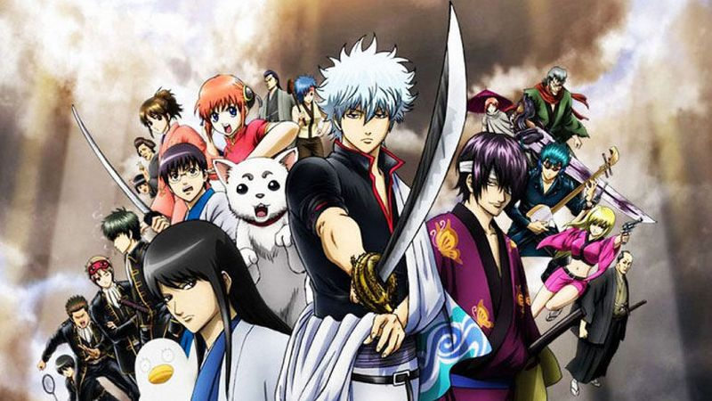
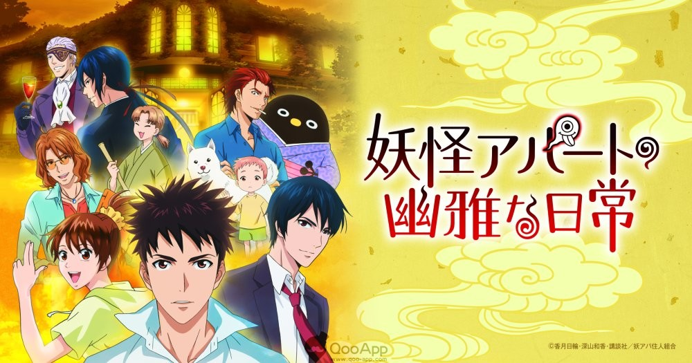
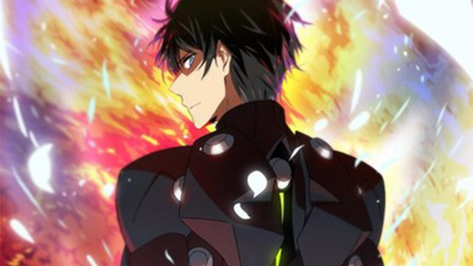

Dragon Ball Super
Nov 12, 2017Views : 3,487,497Tournament of Power dalam Dragon Ball Super semakin memanas! Meskipun Goku dan Jiren telah berhadap-hadapan, tetapi tampaknya petarungan dua petarung terkuat dari masing-masing universe-nya tersebut masih akan disimpan untuk penghujung Turnamen—mengingat Goku sendiri akan kalah dan terluka parah...
SelengkapnyaBoruto
Augs 22, 2017Views : 3,487,497Sinopsis:Lanjutan Dari Serial Naruto Shippuden yang telah tamat dan mempunyai anak yang Bernama Boruto,Diawal Eps Diperlihatkan Desa Konoha Telah Hancur Oleh Seorang Bocah yang Bernama Kawaki.Namun Kawaki Dihadang Oleh Boruto...
SelengkapnyaShokugeki No Soma
Sept 15, 2017Views : 3,487,497Sinopsis:Bercerita Tentang Seorang Anak Muda yang Jago Masak Bernama Yukihira Souma yang Dikirim Ke Sekolah Eliite Olah Ayahnya Yang Ternyata Elite ke 2 Pada Era Terdahulu Bagaimanakah Perjuangan Yukihira Souma Untuk Menjadi Elite...
SelengkapnyaONE PIECE
Sept 15, 2017Views : 3,487,497Sinopsis:Seorang pemuda yang mempunyai mimpi menjadi raja bajak laut dan mendapatkan harta bajak laut yang paling terkenal yaitu ONE PIECE. Dalam perjalanannya dia melalui berbagai rintangan serta mendapatkan kru kapal bajak laut yang...
Selengkapnya

Update Anime

- 
- 
- 